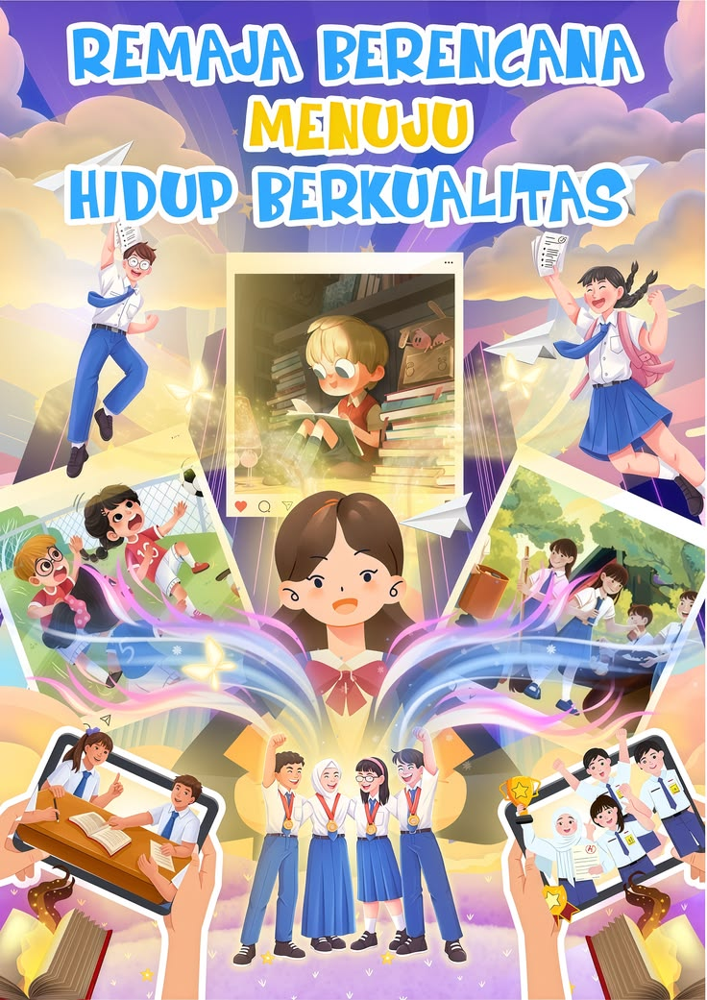
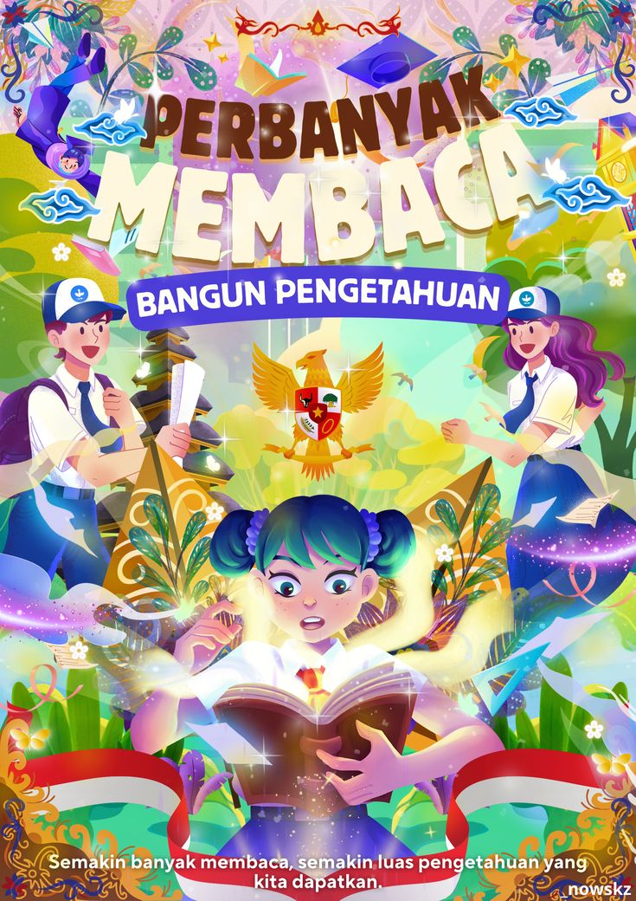
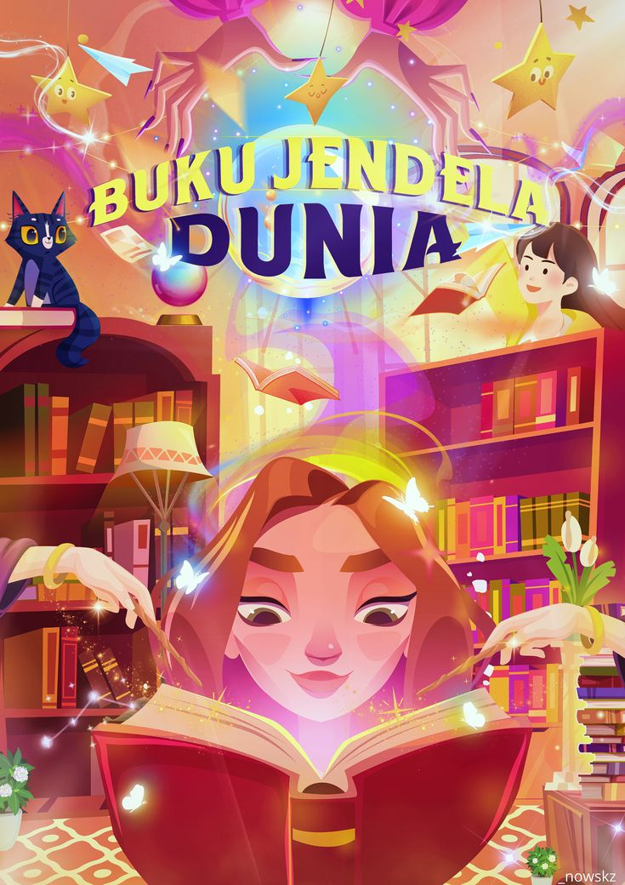
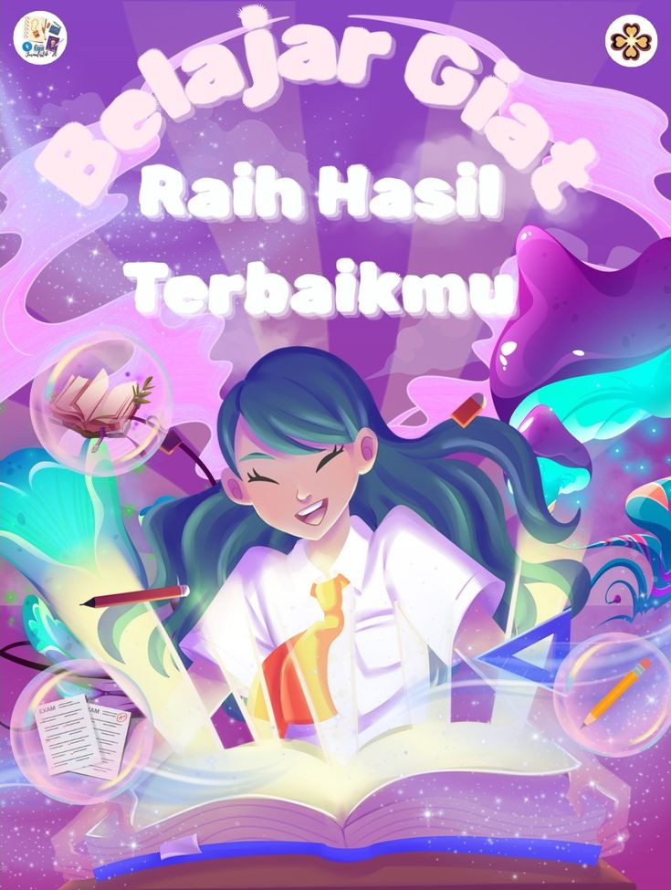
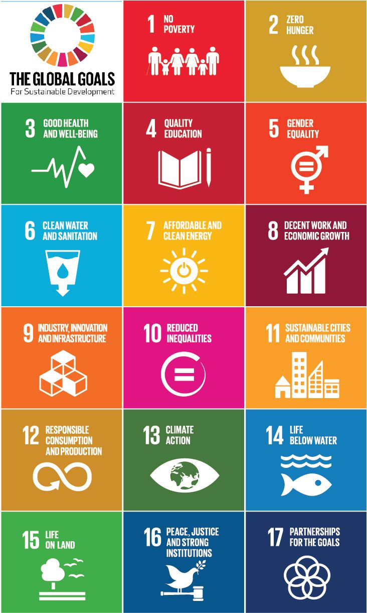
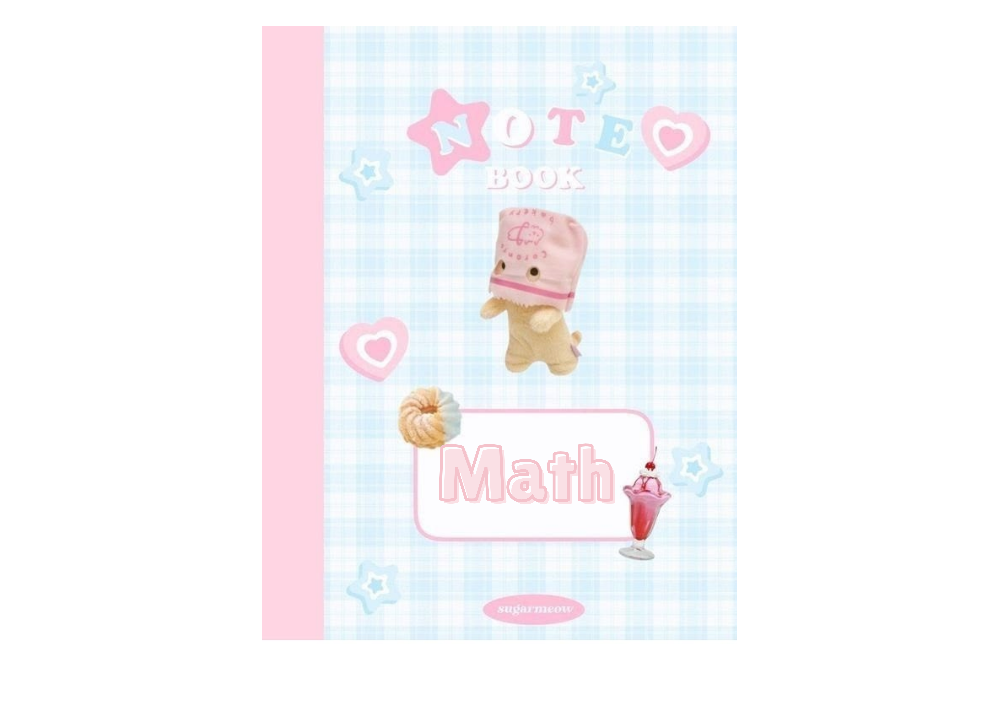

♡
✿ LITTLE STEPS, BIG CHANGES ✿
Selamat datang di website Little Steps, Big Changes! Website ini mengajak kita mengenal Sustainable Development Goals (SDGs), khususnya tujuan ke-4, yaitu Pendidikan Berkualitas. Melalui website ini, kita akan membahas pentingnya pendidikan, berbagai tantangan yang masih dihadapi, serta bagaimana kerja sama dapat membantu menciptakan kesempatan belajar yang lebih baik bagi semua orang.
Let's Explore!
✧
LET'S GET TO KNOW
Apa Itu SDGs?
Sustainable Development Goals (SDGs) atau Tujuan Pembangunan Berkelanjutan merupakan agenda global yang disusun oleh Perserikatan Bangsa-Bangsa (PBB) dan disepakati oleh 193 negara pada tahun 2015. SDGs memiliki 17 tujuan dan 169 target yang ingin dicapai pada tahun 2030.
Tujuan-tujuan tersebut mencakup berbagai permasalahan dunia, mulai dari kemiskinan, kelaparan, kesehatan, pendidikan, kesetaraan, hingga perlindungan lingkungan. Setiap tujuan saling berhubungan karena pembangunan yang berkelanjutan membutuhkan keseimbangan dalam bidang sosial, ekonomi, dan lingkungan.
Untuk mencapai tujuan tersebut, setiap negara perlu berperan aktif dan bekerja sama. Pemerintah, organisasi internasional, sekolah, keluarga, dan masyarakat memiliki tanggung jawab untuk ikut mendukung perubahan yang lebih baik.

17 Goals, One Better Future!THE GLOBAL GOALS
17 Tujuan SDGs
Setiap tujuan memiliki fokus yang berbeda, tetapi semuanya saling berhubungan untuk menciptakan dunia yang lebih baik.
.png)
Ready to discover an SDG?
Click the button to spin the wheel!
MY CHOSEN GOAL
SDG 4: Pendidikan Berkualitas
 Quality Education for Everyone!
Quality Education for Everyone!
SDG 4 atau Pendidikan Berkualitas bertujuan untuk memastikan pendidikan yang inklusif dan merata serta meningkatkan kesempatan belajar sepanjang hayat bagi semua orang.
Pendidikan bukan hanya tentang mendapatkan nilai yang baik atau menyelesaikan tugas sekolah. Pendidikan juga membantu seseorang mengembangkan kemampuan berpikir kritis, literasi, kreativitas, komunikasi, dan keterampilan untuk menghadapi masa depan.
Namun, masih terdapat berbagai tantangan dalam mewujudkan pendidikan berkualitas. Beberapa di antaranya adalah keterbatasan akses pendidikan, kurangnya fasilitas belajar, kemampuan literasi yang perlu ditingkatkan, serta kurangnya keaktifan murid dalam proses pembelajaran.
Oleh karena itu, pendidikan berkualitas membutuhkan dukungan dari murid, guru, orang tua, pemerintah, dan masyarakat. Setiap orang harus memiliki kesempatan untuk belajar dan mengembangkan potensinya tanpa diskriminasi.
Explore SDG 4
EVERY LITTLE THING MATTERS
Change Starts With Us!
Pendidikan berkualitas bukan hanya tanggung jawab pemerintah atau sekolah. Kita sebagai murid juga dapat mengambil bagian dalam mewujudkannya. Mulailah dengan membiasakan diri membaca, aktif dalam diskusi, berani bertanya, menghargai pendapat orang lain, dan menggunakan teknologi serta AI secara bijak untuk membantu proses belajar. Langkah kecil tersebut dapat membantu kita menjadi pembelajar yang lebih mandiri, kritis, dan bertanggung jawab.
Discover More